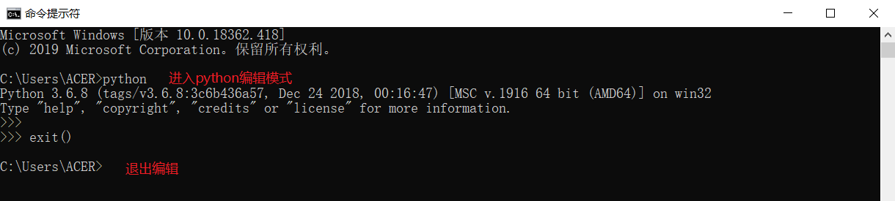
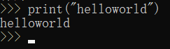
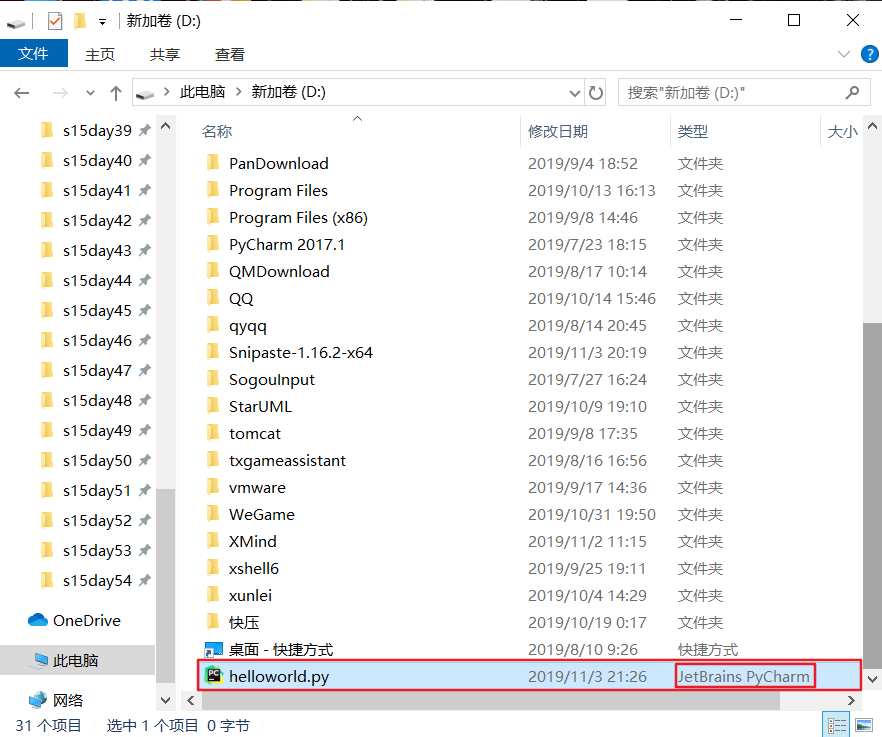
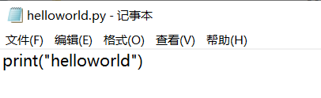
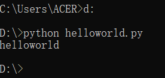
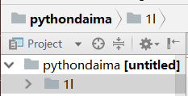
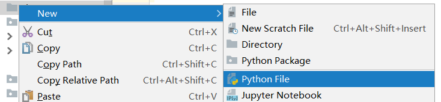
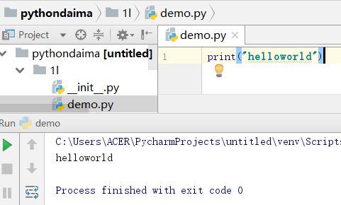

自己百度，这是自学最基本的，安装一路确定即可，记得path下打钩。
python程序有两种编写方式：
1.进入cmd控制台，输入python进入编辑模式。这时候我们可以直接编写python程序
2.也可以在.py文件中编写python代码。通过python命令来执行python代码
注意：python2默认的编码是ASCII码编码，处理不了中文，需要替换成utf-8编码。python3默认的编码为unicode，utf-8可以看做是unicode的一个扩展集。
python2可以在.py中第一行加入
# -*- encoding:utf-8 -*-进入和退出：

helloworld案例：

1.在D盘下创建一个helloworld.py的文件(注意文件类型,图标不同是因为我安装了pycharm软件)

2.进入helloworld.py,输入内容

3.cmd进入D盘，使用 python 文件名 来运行文件

pycharm软件的下载和安装、激活码、使用说明都可以在百度上查询到，此处就不描述了。
右键-->new-->python package(创建包)：

在包目录下创建python文件：

点击新建的python文件，输入代码：
